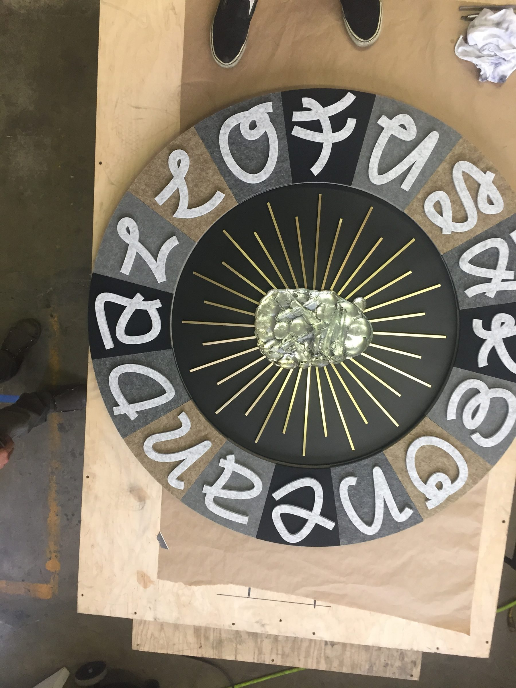
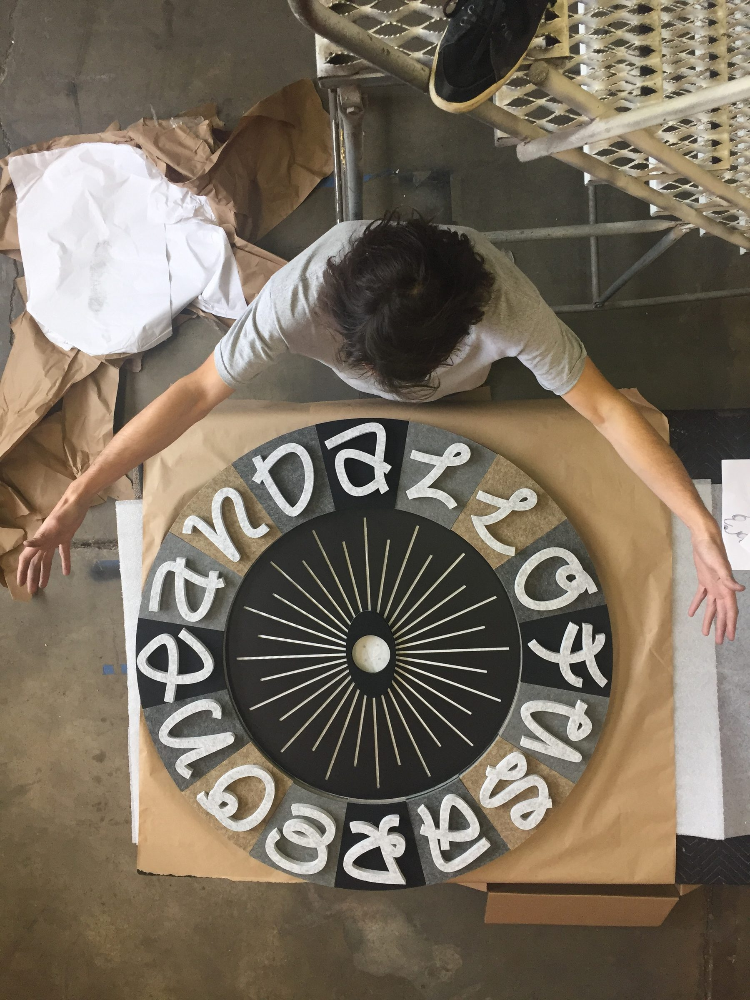
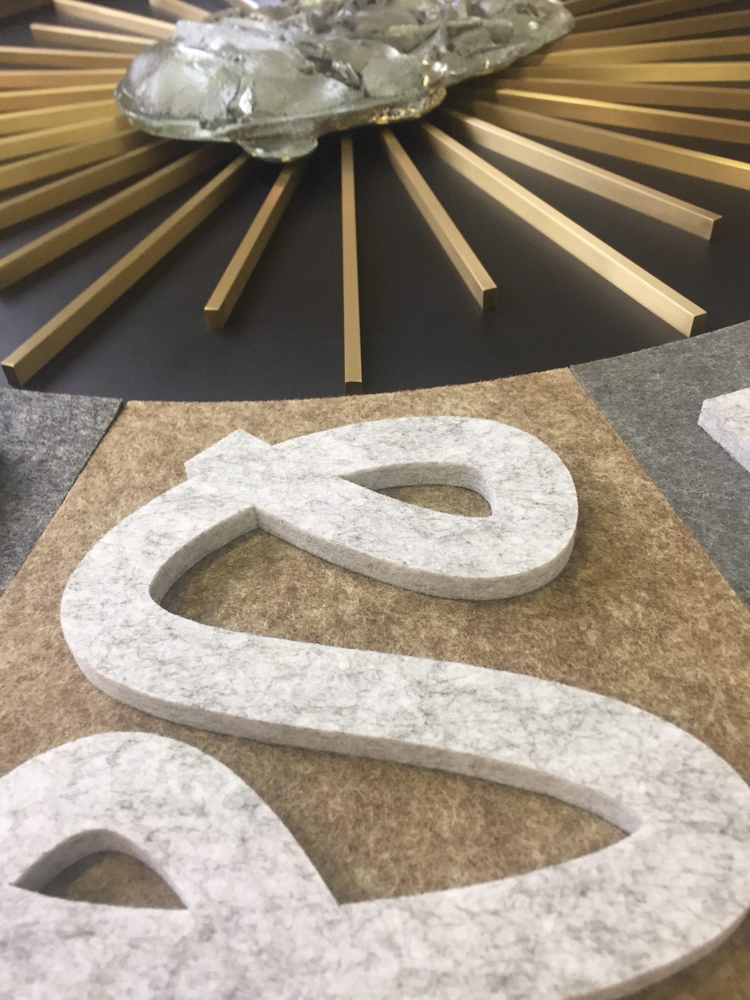
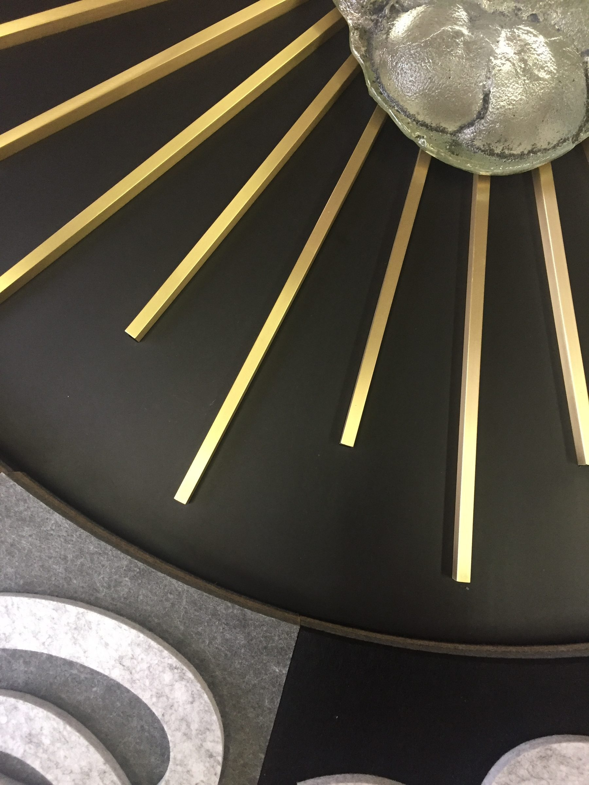
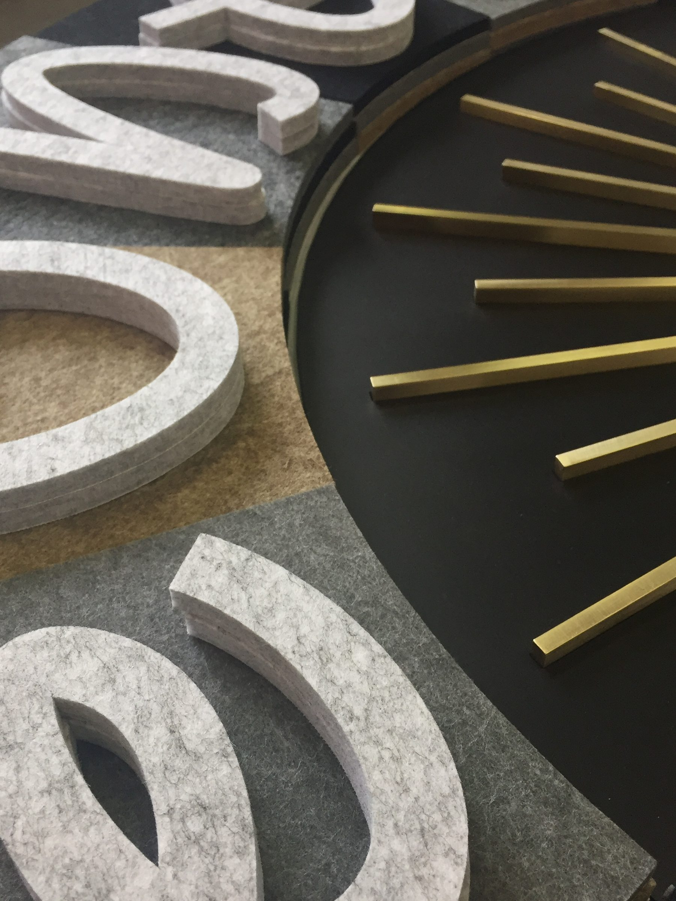
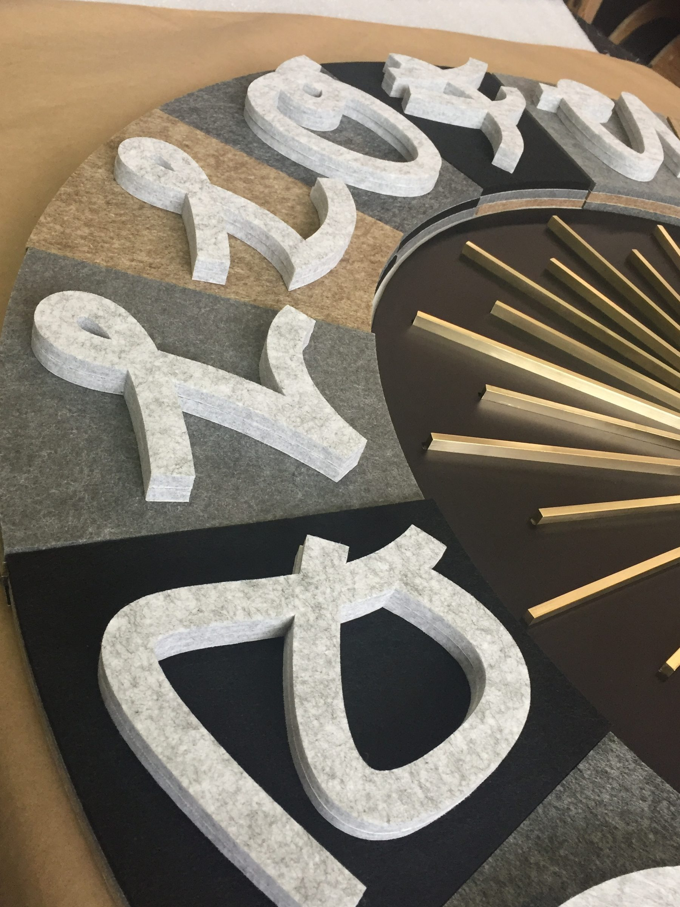
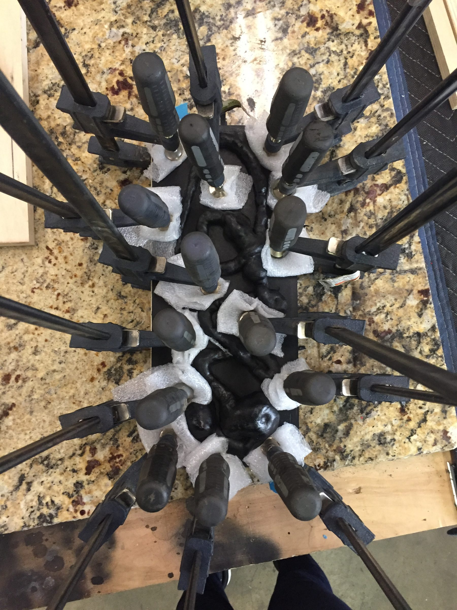
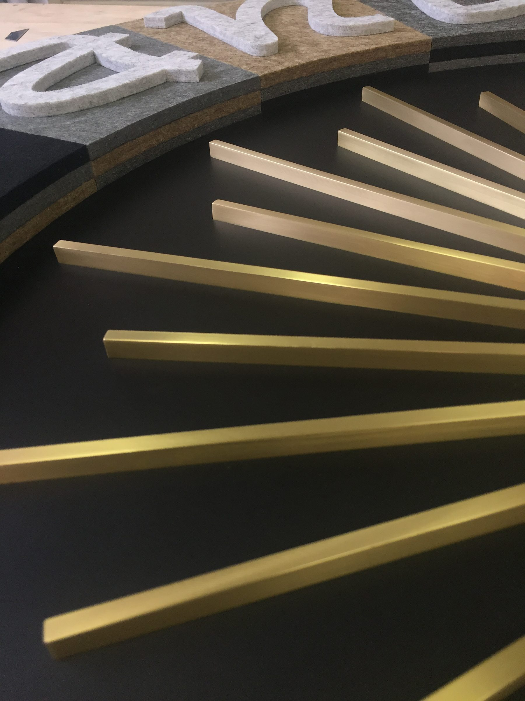

Objects / 2015
The Clock
Rick Valicenti / Thirst
A cast timepiece developed with designer Rick Valicenti, its face set with cast letterforms and a burst of machined brass rays.
The Clock came out of a design competition that Rick Valicenti shepherded into a Chicago internship, and was produced at West Supply with Ben Stagl as design engineering consultant.
The face carries cast letterforms around a black disc, with machined brass rays radiating from a cast glass center. Pattern preparation, casting and finishing were all handled in house.
The collaboration continued into Valicenti's 2016 artist in residence exhibition at Loyola University's Ralph Arnold Gallery, where the same team fabricated and installed the show.
Details
- Year
2015 - Location
Chicago, IL - Category
Objects - Materials
Cast metal, cast glass, machined brass
Credits
- Designer: Rick Valicenti, Thirst
- Produced at West Supply LLC
- Design engineering: Ben Stagl
Download
Index







